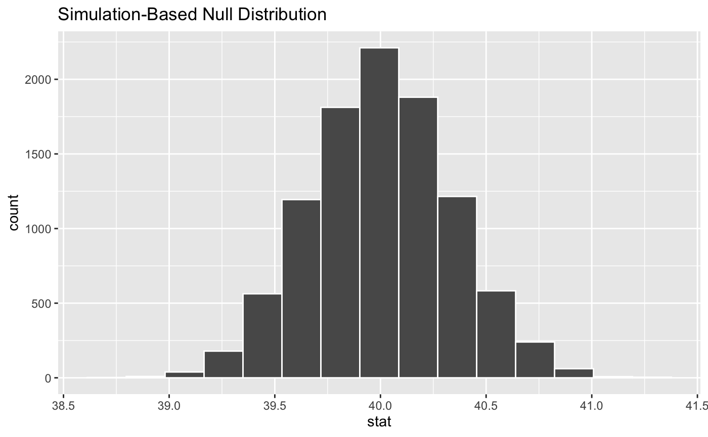
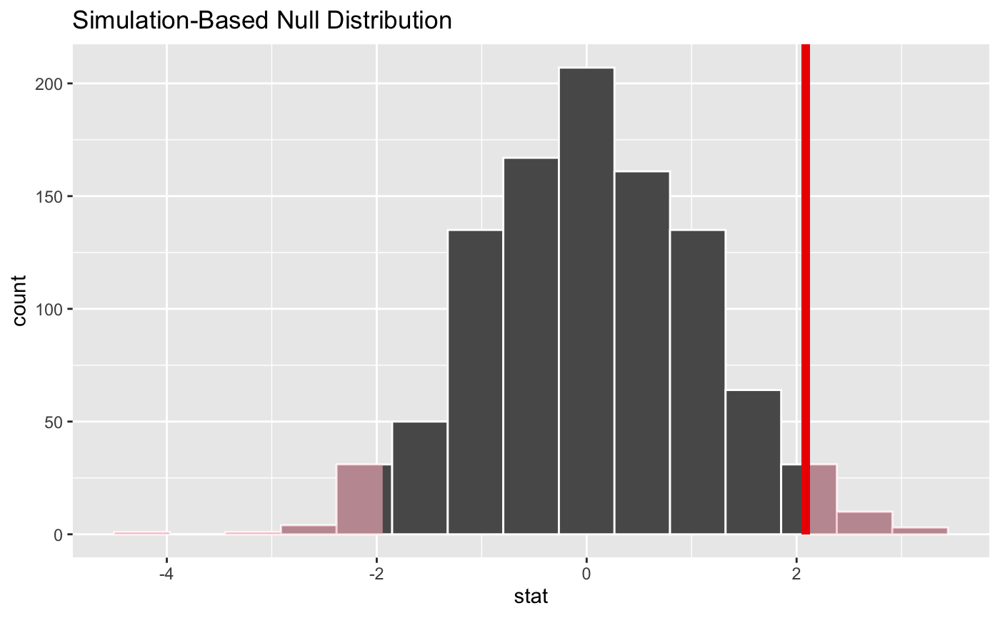
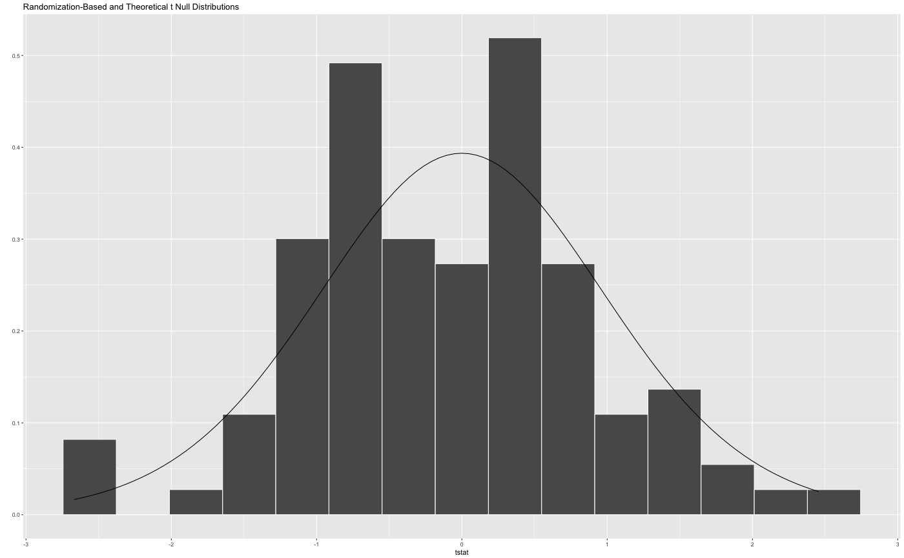

(Currently) Visualize the resampling distribution (To be updated to include theory-based distributions)
visualize(data, bins = 30, method = "randomization", obs_stat = NULL, obs_stat_color = "#00BFC4", direction = NULL, ...)
| data | the output from |
|---|---|
| bins | the number of bins in the histogram |
| method | a string giving the method to display. Options are "randomization", "theoretical", or "both" with "both" corresponding to "randomization" and "theoretical" |
| obs_stat | a numeric value corresponding to what the observed statistic is |
| obs_stat_color | a character or hex string specifying the color of the observed statistic |
| direction | a string specifying in which direction the shading should occur. Options are "less", "greater", or "two_sided". Can also specify "left", "right", or "both". |
| ... | currently ignored |
# Permutations to create randomization null distribution for # one numerical response and one categorical predictor # using t statistic if(require(dplyr)) { mtcars %>% mutate(am = factor(am)) %>% specify(mpg ~ am) %>% # alt: response = mpg, explanatory = am hypothesize(null = "independence") %>% generate(reps = 100, type = "permute") %>% calculate(stat = "t") %>% visualize(method = "randomization") #default method }# Theoretical t distribution for # one numerical response and one categorical predictor # using t statistic if(require(dplyr)) { mtcars %>% mutate(am = factor(am)) %>% specify(mpg ~ am) %>% # alt: response = mpg, explanatory = am hypothesize(null = "independence") %>% calculate(stat = "t") %>% visualize(method = "theoretical") #default method }# Overlay theoretical distribution on top of randomized t-statistics if(require(dplyr)) { mtcars %>% mutate(am = factor(am)) %>% specify(mpg ~ am) %>% # alt: response = mpg, explanatory = am hypothesize(null = "independence") %>% generate(reps = 100, type = "permute") %>% calculate(stat = "t") %>% visualize(method = "both") }